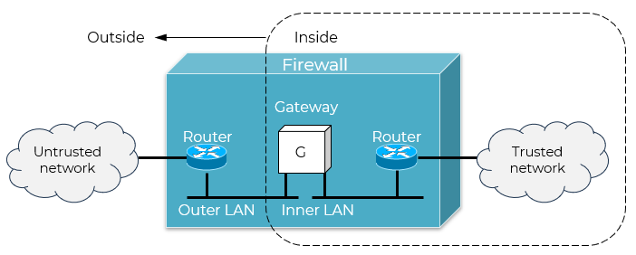

用户入侵：利用系统漏洞进行未授权登录；授权用户非法获取更高级别权限等
软件入侵：通过网络传播病毒、蠕虫和特洛伊木马；拒绝服务攻击等

处理速度快，开销小
对用户透明，无需修改应用程序
实现简单，成本低
无法理解应用层协议内容（如HTTP、FTP命令）
难以防范应用层攻击（如SQL注入、跨站脚本）
规则配置复杂时易出错，存在安全漏洞风险
无法有效处理动态端口协议（如FTP主动模式）
提供更细粒度的安全控制（可检查URL、文件类型、用户身份等）
能有效防御应用层攻击
可记录详细日志，便于审计
隐藏内部网络结构（客户端只看到代理）
性能开销大，处理速度慢
每种应用协议需单独开发代理模块
可能不支持某些新协议或自定义协议
用户需配置代理设置（除非使用透明代理）
Web 代理：检查 HTTP 请求中的恶意脚本
FTP 代理：验证用户登录并限制上传/下载目录
邮件网关：扫描垃圾邮件或病毒附件
A firewall is defined as a cybersecurity tool that monitors incoming and outgoing network traffic and permits or blocks data packets based on a set of cybersecurity rules.
Firewall architecture is built upon four primary components — network policy, advanced authentication, packet filtering, and application gateways.